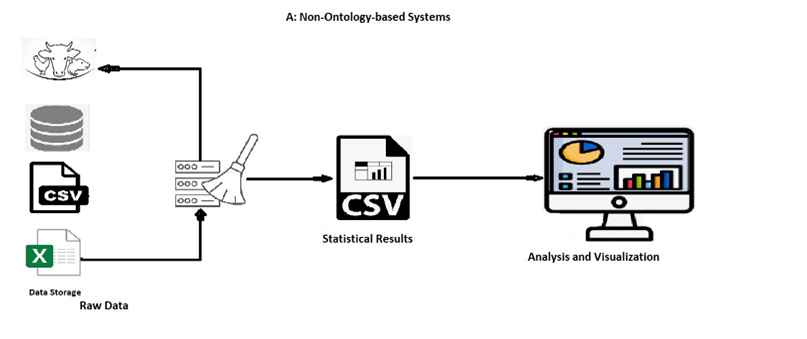
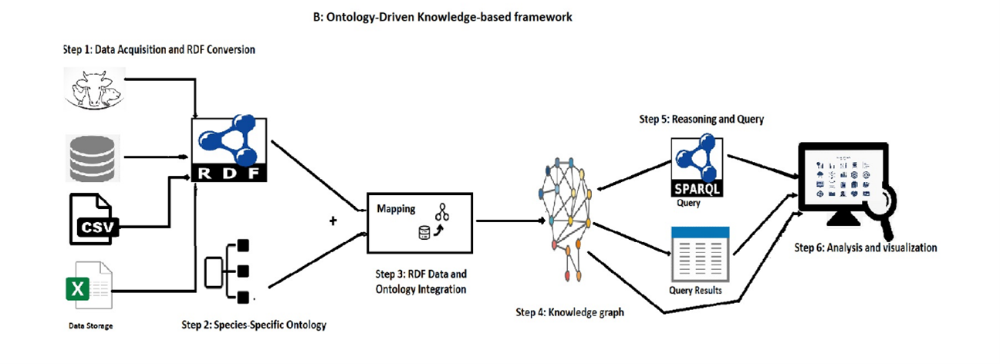
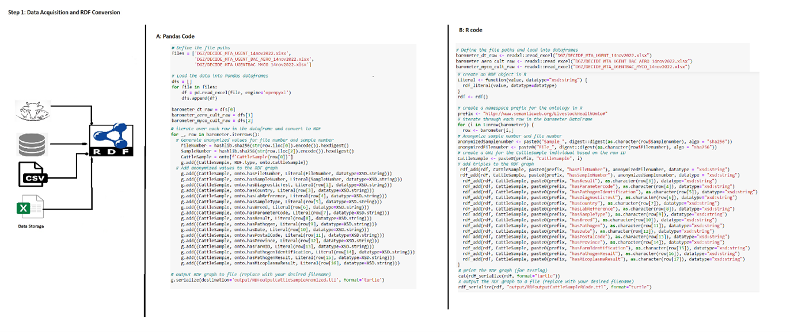
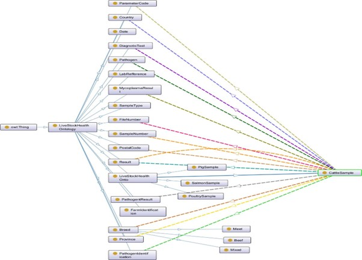
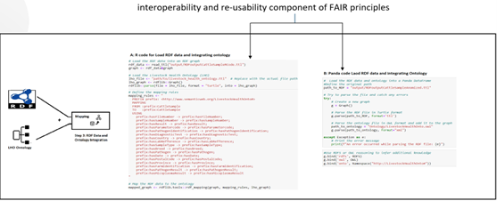
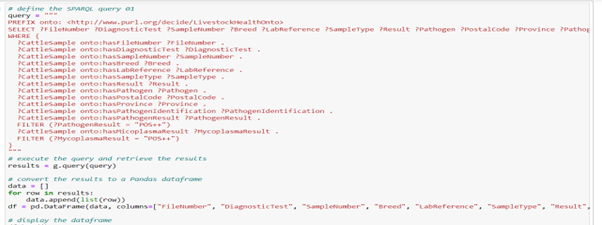
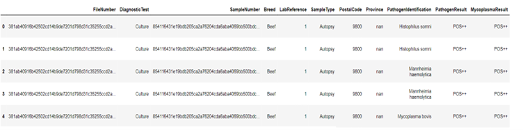

Ontology
How to implement ontologies within your data pipeline
System Model

Non-ontology-based systems require rewriting the cleaning code each time new data arrives, making it time-consuming and tedious. These systems lack interoperability, flexibility, reusability, and accessibility, posing limitations in data integration, handling, and adaptability.

In this use case, we utilize the ODKFADM framework to evaluate cattle-related data (DGZ), It involves collecting raw data from different data sources i.e. DGZ, and including information about farm identification, geo-location, infectious diseases, PCR, and bacterial culture results. This framework enables effective analysis of the data, leading to insights into cattle health
Step 1: Data Acquisition and RDF conversions

In Figure 3, we read heterogeneous raw data using pandas, and R data frames, and then convert them into RDF format.
Step 2: Species-Specific Ontology (LHO)

Step 3: RDF Data and Ontology Integration (Mapping)
In this step we map the RDF data with LHO which enhances the reasoning and query capabilites

Step 4: Knowledge graph (Ontology Update)
Resulted into a knowledge graph
Step 5: Reasoning and Query
Figure 6 and 7 shows Query and query results that Filtering positive PathogenResults and MycoplasmaResults associated with CattleSample


Step 6: Visualization and Analysis
We choose Tableau for the visualization method. It provides meaningful insights to explore the knowledge graph. For this, we need a working ODBC connection to a Virtuoso Instance and ODBC or JDBC Compliant version of Tableau or Tableau Server. For ODBC connection to virtuoso, the link is: Visualizing SPARQL Results in Tableau | by Daniel Heward-Mills | OpenLink Virtuoso Weblog | Medium